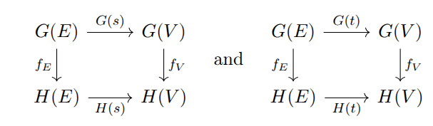
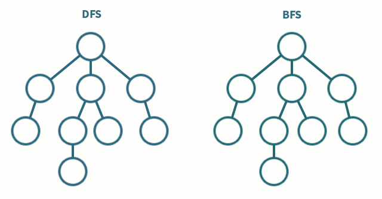

The origins of graph theory date back to 1736, when Leonhard Euler solved the Königsberg bridge problem, showing no walk could traverse each bridge exactly once. This launched the study of Eulerian trails and inaugurated graph theory as a mathematical discipline. In the 19ᵗʰ century, Sir William Rowan Hamilton investigated cycles on polyhedral graphs, giving rise to Hamiltonian paths. Cayley’s enumeration of trees in 1889 foreshadowed both combinatorial and algebraic methods. In the 20ᵗʰ century, Kuratowski’s planarity criterion (1930) and the Robertson-Seymour Graph Minor Theorem (1980s–2000s) established deep connections between local structure and global graph properties.
A graph
We refer to
If edges carry a direction, we instead take
so that an edge
When every edge
Two vertices
The degree of
Important substructures arise by restricting to subsets of
so that two vertices are adjacent in the complement precisely when they were not adjacent in
One sometimes passes to the line graph
A spanning tree of a connected graph
where
A simple random walk on
The mixing time
where
The effective resistance
and governs both commute times of the random walk and energy dissipation in the network.
In category theory a directed graph can be described as a presheaf on a tiny “shape” category. Let
standing for “source” and “target.” A graph
so that
send each edge to its source and target. In this way the category of graphs is canonically equivalent to the presheaf topos
which immediately grants it all limits, colimits, exponentials, and a subobject classifier inherited pointwise from
Under this lens, a graph homomorphism

ensures that sources and targets are preserved.
Because
The product of two graphs
In particular, the pushout along a monomorphism models the gluing of graphs along a common subgraph, the foundational step of the double‐pushout approach to graph rewriting.
An important adjunction relates graphs to categories. The forgetful functor (Appendix-III)
drops composition and identities, leaving only the underlying directed graph. Its left adjoint
freely generates a category on a graph: objects are the original vertices, morphisms are finite paths (including the empty path as identity), and composition is path concatenation. This adjunction
Because
Algebraic graph theory studies a graph’s structure through matrices whose entries encode adjacency or incidence relationships, and through the spectral properties of those matrices. Given a simple undirected graph
Because
The trace
The largest eigenvalue
To capture connectivity and flow, one introduces the combinatorial Laplacian
encode deep combinatorial invariants. The multiplicity of the zero eigenvalue equals the number of connected components, and the second‐smallest eigenvalue
one sees directly its relation to isoperimetric constants and hence to expansion.
In parallel, the normalized Laplacian
The transition matrix
A crowning result of algebraic graph theory is the Matrix‐Tree Theorem. Remove the
counts the number of spanning trees in
when
Beyond enumeration, the pseudoinverse
which in turn governs commute times of random walks.
Let’s compute the number of spanning trees of a small 4-vertex graph via the Matrix-Tree Theorem. Label the vertices
Here
First, form the degree matrix
Hence
The (combinatorial) Laplacian is
By the Matrix-Tree Theorem, the number of spanning trees
We compute its determinant by expansion along the first row:
so this graph has exactly three spanning trees.
Breadth‐First Search (BFS) One maintains a queue of discovered but unprocessed vertices. Initially only
This guarantees that when
function BFS(G, s):
for each vertex u in G:
color[u] ← WHITE
d[u] ← ∞
π[u] ← NIL
color[s] ← GRAY
d[s] ← 0
π[s] ← NIL
Q ← empty queue
enqueue(Q, s)
while Q not empty:
u ← dequeue(Q)
for each v in Adj[u]:
if color[v] = WHITE:
color[v] ← GRAY
d[v] ← d[u] + 1
π[v] ← u
enqueue(Q, v)
color[u] ← BLACK
Here color[u] tracks whether
The distances
Depth‐First Search (DFS) instead dives as deeply as possible before backtracking. It can be implemented with recursion or an explicit stack. On visiting a vertex
time ← 0
function DFS(G):
for each vertex u in G:
color[u] ← WHITE
π[u] ← NIL
for each vertex u in G:
if color[u] = WHITE:
DFS-Visit(u)
function DFS-Visit(u):
time ← time + 1
disc[u] ← time
color[u] ← GRAY
for each v in Adj[u]:
if color[v] = WHITE:
π[v] ← u
DFS-Visit(v)
color[u] ← BLACK
time ← time + 1
fin[u] ← time
Because each vertex enters DFS-Visit exactly once and each edge is considered once, DFS also runs in

Source
Vertices
Adjacency lists:
We run BFS from
| Step | Queue before | Dequeued | Newly discovered | Queue after | |
|---|---|---|---|---|---|
| 1 | |||||
| 2 | |||||
| 3 | — | ||||
| 4 | — | ||||
| 5 | — |
After step 5 the queue is empty and BFS is complete.
We perform a recursive DFS, visiting neighbors in alphabetical order. We record a global time counter time, incremented on each discovery and finish.
| time | Action | Vertex | Stack |
|---|---|---|---|
| 1 | discover | ||
| 2 | discover | ||
| 3 | discover | ||
| 4 | discover | ||
| 5 | finish | ||
| 6 | discover | ||
| 7 | finish | ||
| 8 | finish | ||
| 9 | finish | ||
| 10 | finish |
From this trace we extract discovery/finish times and parent pointers:
| Vertex | disc | fin | Parent |
|---|---|---|---|
| 1 | 10 | NIL | |
| 2 | 9 | ||
| 3 | 8 | ||
| 4 | 5 | ||
| 6 | 7 |
A minimum‐spanning tree (MST) of a connected, weighted undirected graph
Two classical greedy routines—Kruskal’s and Prim’s algorithms—find an MST in
The disjoint-set union (or union-find) structure maintains a partition of a universe of elements into disjoint classes, supporting three operations:
A classic implementation uses parent‐pointer trees: each element
Union by rank (or size): each root
Path compression: during Find, make every visited node
Here is a standard pseudocode:
function MakeSet(x):
parent[x] ← x
rank[x] ← 0
function Find(x):
if parent[x] ≠ x then
parent[x] ← Find(parent[x]) # path compression
return parent[x]
function Union(x, y):
r_x ← Find(x)
r_y ← Find(y)
if r_x = r_y then return
if rank[r_x] < rank[r_y] then
parent[r_x] ← r_y
else if rank[r_x] > rank[r_y] then
parent[r_y] ← r_x
else
parent[r_y] ← r_x
rank[r_x] ← rank[r_x] + 1
With these two optimizations, any sequence of
where
Under the hood, the invariant is that each set is represented by a rooted tree whose height remains
Union-find is indispensable in Kruskal’s MST algorithm, connectivity queries in dynamic graphs, and clustering applications (e.g. union by similarity), wherever one must repeatedly merge and query equivalence classes efficiently.
Kruskal’s method sorts all edges in non‐decreasing order of weight and then scans them, adding each edge if and only if it does not create a cycle in the growing forest. A union‐find (disjoint‐set) data structure tracks which vertices are already connected, supporting
function Kruskal(G):
A ← ∅
sort edges E by increasing w(e)
for each edge (u,v) in sorted E:
if Find(u) ≠ Find(v):
A ← A ∪ {(u,v)}
Union(u,v)
if |A| = n-1: break
return A
Since sorting takes
Correctness follows by the exchange argument: when considering an edge
Correctness Proof
Let
(a)
(b)
Let
Invariant. At the start of each iteration, just before Kruskal considers the next lightest edge
, there exists an MST such that .
Base case. Initially
Inductive step. Suppose the invariant holds and Kruskal now considers the next edge
of minimum weight
Case 1:
Then
Case 2:
We will exhibit a new MST
By the invariant, there is an MST
that also crosses the cut
Since
Define
Then:
Its total weight
so
By construction
Thus in both cases there exists an MST containing the updated
When Kruskal’s algorithm terminates it has added
Therefore Kruskal’s algorithm correctly computes a minimum‐spanning tree.
Prim’s algorithm grows a single tree, starting from an arbitrary root
function Prim(G,r):
for each v in V:
key[v] ← ∞
π[v] ← NIL
key[r] ← 0
Q ← make‐min‐heap(V, key)
while Q not empty:
u ← ExtractMin(Q)
for each neighbor v of u:
if v in Q and w(u,v) < key[v]:
π[v] ← u
key[v] ← w(u,v)
DecreaseKey(Q, v, key[v])
return {(π[v], v) : v ≠ r}
Here key[v] maintains the weight of the lightest edge connecting π[v] records its parent in the final MST. Each vertex is extracted once (DecreaseKey (
Correctness Proof
Let
Invariant. After
Base case (
Inductive step. Suppose after
If
Otherwise
Form the tree
Removing
making
When the algorithm terminates with
Dijkstra’s algorithm solves the single‐source shortest‐path problem on a directed or undirected graph with nonnegative edge weights. Given a weighted graph
where the minimum is over all paths
Dijkstra published the algorithm in 1959; its elegance comes from a simple greedy idea augmented by a priority queue to pick the “closest” unreached vertex at each step.
function Dijkstra(G, w, s):
for each v in V:
d[v] ← ∞
π[v] ← NIL
d[s] ← 0
Q ← a min‐priority queue of all v∈V keyed by d[v]
while Q not empty:
u ← ExtractMin(Q) # the unreached vertex with smallest d[u]
for each edge (u,v) in E:
alt ← d[u] + w(u,v)
if alt < d[v]:
d[v] ← alt
π[v] ← u
DecreaseKey(Q, v, alt)
return (d, π)
When implemented with a binary heap, each of the DecreaseKey also in
If one uses a Fibonacci heap, DecreaseKey becomes amortized